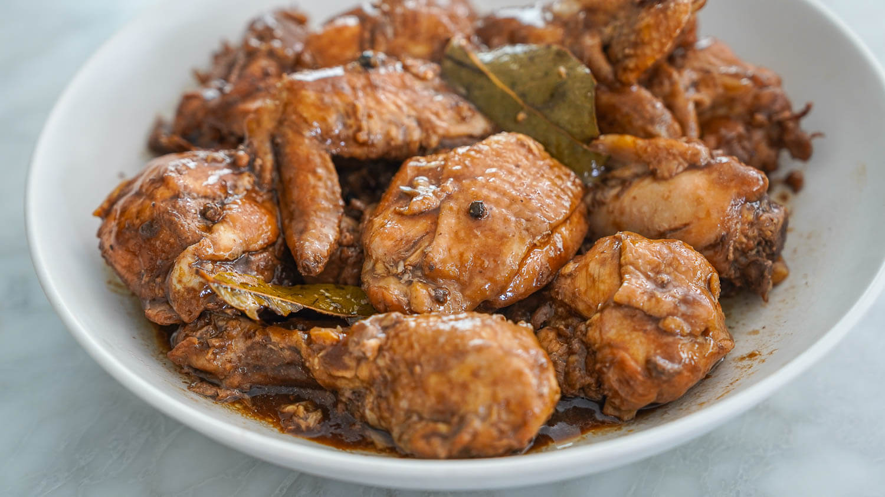

Filipino Adobo Recipe
Home

Source: Panlasang Pinoy Website
Chicken Adobo
This Filipino dish is popular in the Philippines. The main ingredients in this meal either chicken and pork, together with soy sauce and other spices. Its tenderness of chicken suits the salty taste yet, savory of soy sauce and vinegar.
Everyone in the country loves this because the sauce could go with rice. Filipinos loves Adobo.
Ingredients
- Chicken
- Soy Sauce
- Vinegar
- Garlic
- Bay Leaves
- Black Pepper
- Salt
- Sugar
Steps to Prepare
-
Marinate:
Crush the garlic cloves (using a mortar and pestle for best results). In a bowl, combine the chicken pieces, soy sauce, and crushed garlic. Mix well and let it marinate for at least 1 hour (longer is better for deeper flavor).
-
Separate and set aside:
After marinating, separate the chicken from the garlic and liquid marinade. Keep both aside for later use.
-
Pan-fry the chicken:
Heat about 3 tablespoons of cooking oil in a pot. Once hot, add the marinated chicken (without the liquid) and fry for about 2 minutes per side. Remove the chicken and set it aside
-
Sauté the garlic:
In the same pot, add the remaining oil and the garlic from the marinade. Sauté until the garlic starts to brown.
-
Return chicken and add ingredients:
Put the chicken back into the pot. Add the leftover marinade, whole peppercorns, and dried bay leaves. Pour in the water and bring everything to a boil.
-
Simmer until tender:
Cover the pot and let it simmer for about 30 minutes, or until the chicken becomes tender.
-
Add vinegar and finish cooking:
Pour in the white vinegar. Let it boil before stirring (this avoids a sharp, raw taste). Then stir and continue simmering for another 15 minutes.
-
Season and serve:
Add sugar and salt to taste. Stir, then turn off the heat. Transfer to a serving plate and enjoy hot with steamed rice.